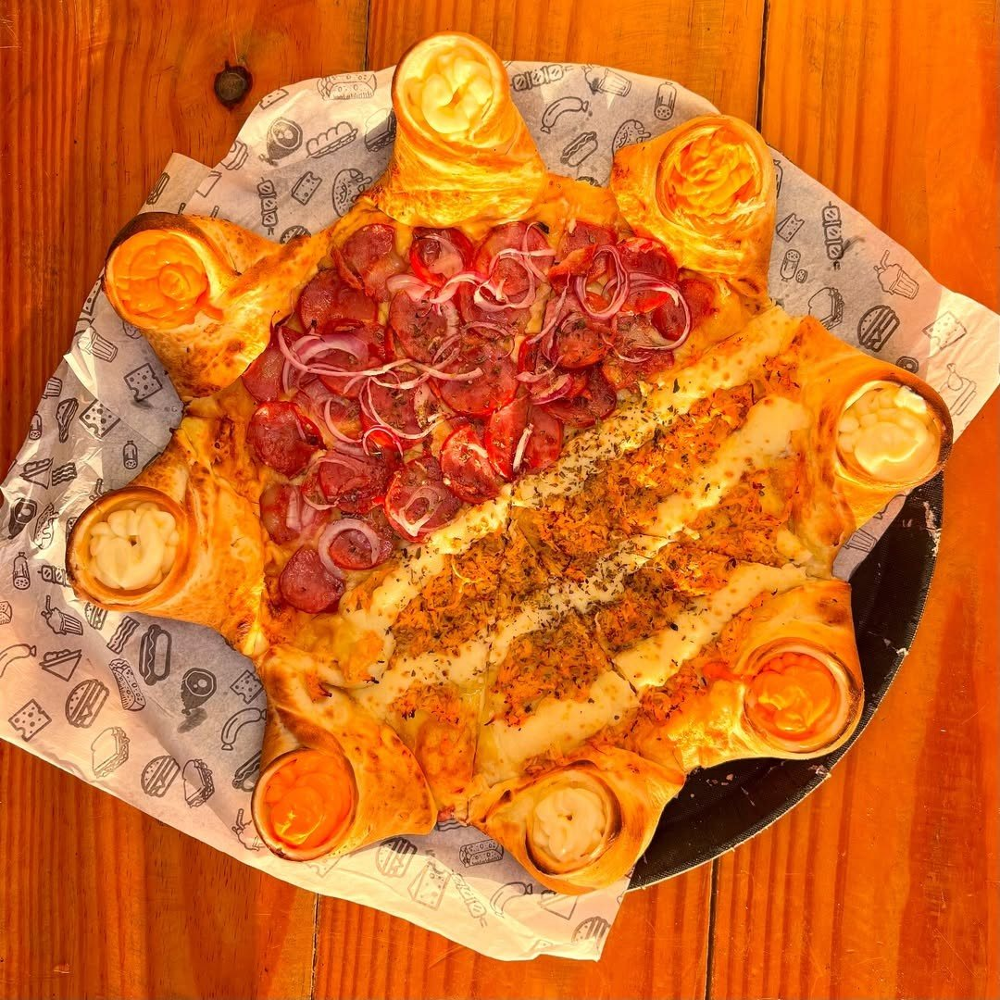
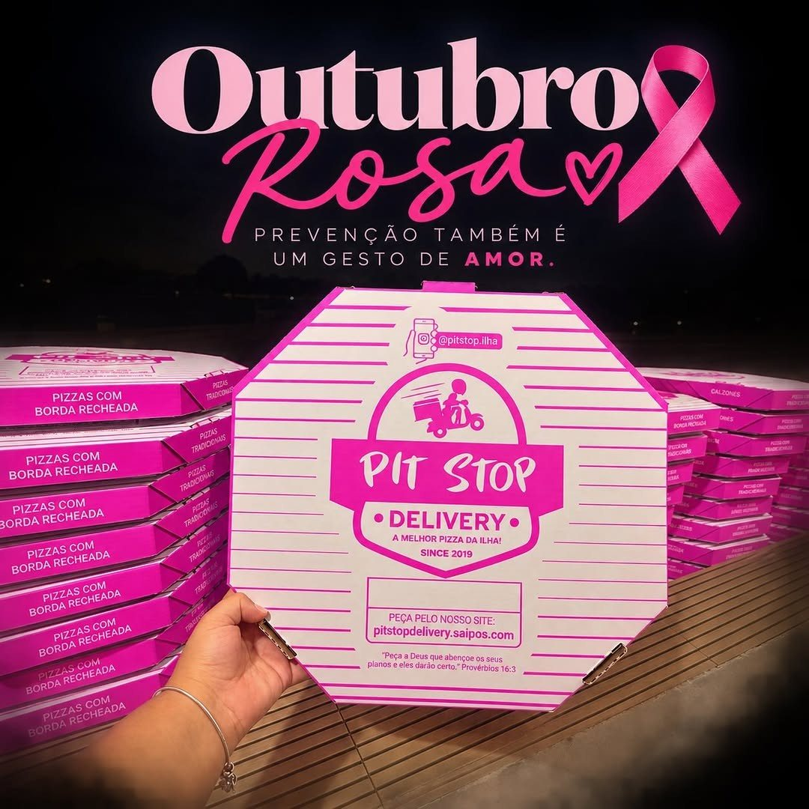

Início · A PitStop
A PitStop, na Barra do Pote
Pizzaria de entrega e salão na Ilha de Itaparica: mesas de madeira, área kids e a caixa que diz o que a casa pensa da própria pizza.
Salão
Mesas de madeira e cadeiras amarelas
O salão é coberto, com o letreiro PIZZARIA PITSTOP e o banner “comer pizza com as mãos é muito mais gostoso”. Os vídeos que a casa publica no Instagram mostram o mesmo salão.

Família
Um pequeno parque para as crianças
“Lugar perfeito aconchegante Com uma área kids perfeita pra família toda”Cliente no Google
As avaliações citam o parquinho e o ambiente familiar. Para saber se a área kids está aberta no dia, pergunte no WhatsApp.
A caixa
O recado impresso na tampa
Na caixa de pizza, a PitStop imprime o próprio slogan, A melhor pizza da ilha!
, o @pitstop.ilha, o endereço da loja de pedidos e um versículo: “Peça a Deus que abençoe os seus planos e eles darão certo.” (Provérbios 16:3).

Em outubro de 2026, a casa abraçou o Outubro Rosa: “se cuidar também é um ato de amor”.
Onde fica
Barra do Pote, Vera Cruz
Rua Rafael Acelino Marques, 39 · Barra do Pote, Vera Cruz · Ilha de Itaparica. Na ficha do Google, a casa aparece na BA-001, Barra do Pote.
Abrir no Google MapsDúvidas frequentes
Perguntas comuns
Precisa reservar mesa?
A casa não publica reserva de mesa; para saber do salão no dia, pergunte no WhatsApp.
Tem estrutura para crianças?
Há um pequeno parque, citado pelas famílias nas avaliações.
A PitStop tem Instagram?
Sim: @pitstop.ilha, com novidades e promoções da semana.
Bandeirada final
Fome bateu? A PitStop entrega pela ilha.
Monte a pizza, escolha o bairro ou a retirada e mande o pedido pronto para o WhatsApp da casa.